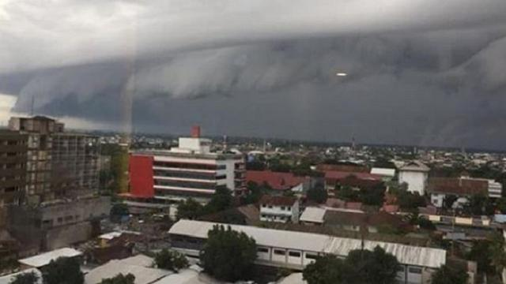

Article
Gadis Indigo Ini Ketakutan Lihat Ramalan 2019 di Indonesia, Pileg & Pilpres Buat Merinding, Ada Apa?
Rabu, 2 Januari 2019 08:20
 Gadis Indigo asal Surabaya Cecilia Theresiana ketakutan melihat ramalan 2019 di Indonesia.
Pemilihan legislatif (pileg) 2019 dan pemilihan presiden (pilpres) 2019 juga membuatnya merinding. Ada apa?
Intinya, Cecil, sapaan akrabnya dilanda ketakutan yang amat sangat dengan ramalan Indonesia pada tahun 2019.
Gadis Indigo asal Surabaya Cecilia Theresiana ketakutan melihat ramalan 2019 di Indonesia.
Pemilihan legislatif (pileg) 2019 dan pemilihan presiden (pilpres) 2019 juga membuatnya merinding. Ada apa?
Intinya, Cecil, sapaan akrabnya dilanda ketakutan yang amat sangat dengan ramalan Indonesia pada tahun 2019.
5 Fakta Suara Misterius Bergema di Langit Pekalongan
15 Des 2018, 09:24 WIB
 meraung-raung di langit Pekalongan awalnya diduga warga sekitar sebagai fenomena alam.
Namun, belakangan pihak BMKG Kota Semarang menilai suara dengungan yang sempat bikin heboh warga
hanyalah suara mesin pesawat yang tengah melintas. Benarkah?
meraung-raung di langit Pekalongan awalnya diduga warga sekitar sebagai fenomena alam.
Namun, belakangan pihak BMKG Kota Semarang menilai suara dengungan yang sempat bikin heboh warga
hanyalah suara mesin pesawat yang tengah melintas. Benarkah?
Awan Berbentuk Gelombang Tsunami Muncul di Langit Kota Makassar
Selasa, 1 Januari 2019
 Awan berbentuk gelombang tsunami muncul di langit Kota Makassar bertepatan dengan hari pertama tahun 2019. Foto-foto awan tsunami tersebut pertama kali diunggah akun media sosial Instagram @makassar_iinfo. Menurut informasi di dalam unggahan tersebut, foto diambil di Bandar Sultan Hasanuddin Makassar, Sulawesi Sekalan.
Abaikan Papan Peringatan, 2 Wisatawan Terseret Ombak Parangtritis
Selasa, 1 Januari 2019
 Yogyakarta - Dua orang wisatawan asal Ngemplak, Klaten, Jawa Tengah terseret ombak saat bermain
di Pantai Parangtritis. Keduanya sempat tergulung ombak dan hampir terbawa arus ke tengah lautan.
Beruntung petugas pantai sigap menyelamatkan keduanya.
Yogyakarta - Dua orang wisatawan asal Ngemplak, Klaten, Jawa Tengah terseret ombak saat bermain
di Pantai Parangtritis. Keduanya sempat tergulung ombak dan hampir terbawa arus ke tengah lautan.
Beruntung petugas pantai sigap menyelamatkan keduanya.